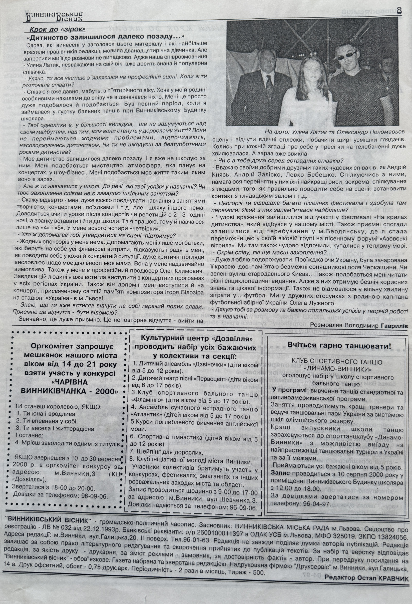

Vynnykivskyi Visnyk Interview (2000)

Basic Information
| Title | Vynnykivskyi Visnyk Interview |
| Material Type | Newspaper Article |
| Featured Artist | Uliana Latyk |
| Publication | Vynnykivskyi Visnyk (Винниківський Вісник) |
| Issue | No. 17–18 (162–163) |
| Publication Date | 14 September 2000 |
| Language | Ukrainian |
Description
On 14 September 2000, the Ukrainian newspaper Vynnykivskyi Visnyk (Винниківський Вісник) published an interview with Uliana Latyk titled "Дитинство залишилося далеко позаду..." ("Childhood Has Been Left Far Behind..."). The interview documents an important stage in the early artistic career of Uliana Latyk, who was already gaining recognition as a young vocalist through performances, festivals, and vocal competitions throughout Ukraine. The article discusses her childhood, first stage appearances, education, family support, musical achievements, and future ambitions. One of the accompanying photographs features Uliana Latyk together with Ukrainian singer Oleksandr Ponomariov. Today, this publication remains one of the earliest preserved newspaper interviews documenting the beginning of her public artistic career.
Archive Information
| Archive Category | Press Publication |
| Original Name | Uliana Latyk |
| Current Stage Name | Ana Danch |
| Archive Reference | Newspaper Interview (2000) |
| Country | Ukraine |
Credits
| Author | Volodymyr Havryliv |
| Publication | Vynnykivskyi Visnyk |
Source Information
| Publication | Vynnykivskyi Visnyk (Винниківський Вісник) |
| Issue | No. 17–18 (162–163) |
| Date | 14 September 2000 |
| Page | 8 |
Archive Materials
Front page of the newspaper.

Interview page featuring Uliana Latyk.
Notes
This newspaper interview is preserved as one of the earliest surviving press publications documenting the artistic career of Uliana Latyk before adopting the stage name Ana Danch.